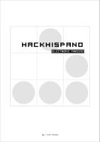

Esta página contiene enlaces a los números publicados de la revista HackHispano eZine en 2009 - 2008 - 2007.
Página web: Revista HackHispano eZine
Número 5 - 2009 octubre
Descarga (PDF 2.7 MB español)
Número 4 - 2009 enero
Descarga (PDF 3.1 MB español)
Número 3 - 2008 abril
Número 2 - 2007 septiembre
Descarga (PDF 1.2 MB español)

Número 1 - 2007 marzo
Descarga (PDF 2.4 MB español)